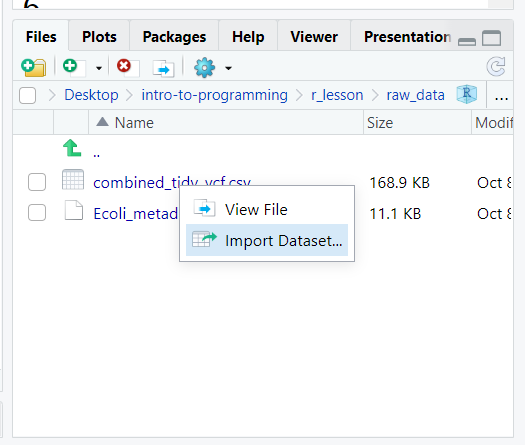
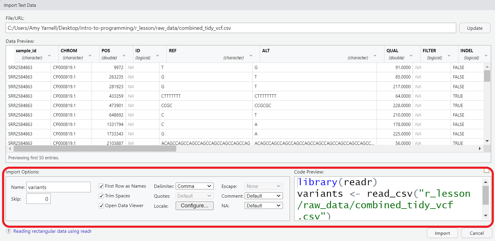
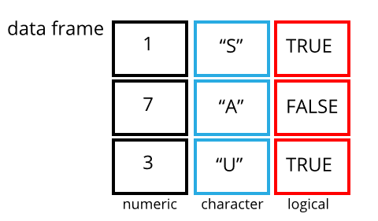

R Basics II - factors and data frames
Working with spreadsheets (tabular data)
A substantial amount of the data we work with in genomics will be tabular data, this is data arranged in rows and columns - also known as spreadsheets. For more on how to work with spreadsheets effectively (check out this lesson). For our purposes, we want to remind you of a few principles before we work with our first set of example data:
1) Keep raw data separate from analyzed data
This is principle number one because if you can’t tell which files are the original raw data, you risk making some serious mistakes (e.g. drawing conclusion from data which have been manipulated in some unknown way).
2) Keep spreadsheet data Tidy
The simplest principle of Tidy data is that we have one row in our spreadsheet for each observation or sample, and one column for every variable that we measure or report on.
As simple as this sounds, it’s very easily violated. Most data scientists agree that significant amounts of their time is spent tidying data for analysis. Read more about data organization in this lesson and in this paper.
3) Trust but verify
Finally, while you don’t need to be paranoid about data, you should have a plan for how you will prepare it for analysis. This a focus of this lesson. You probably already have a lot of intuition, expectations, assumptions about your data - the range of values you expect, how many values should have been recorded, etc. Of course, as the data get larger our human ability to keep track will start to fail (and yes, it can fail for small data sets too). R will help you to examine your data so that you can have greater confidence in your analysis, and its reproducibility.
Tip: Keeping your raw data separate
When you work with data in R, you are not changing the original file you loaded that data from. This is different than (for example) working with a spreadsheet program where changing the value of the cell leaves you one “save”-click away from overwriting the original file. You have to purposely use a writing function (e.g. write_csv()) to save data loaded into R. In that case, be sure to save the manipulated data into a new file. More on this later in the lesson.
To practice good data management, let’s create two new folders (we can do this in our Files pane) - raw_data - output_data
Then we can move our two data files into the raw_data folder.
Importing tabular data into R
There are several ways to import data into R. Here, we will see how to import data through the RStudio interface, and with code. Either way, we will use a function called read_csv(), which is part of the tidyverse package, readr.
Now, let’s read in the file combined_tidy_vcf.csv which will be located in r_lesson/raw_data. In the Files pane of RStudio, click on the name of file we want to read in, and select Import Dataset. This will open up the import widget.

In this widget you can see a preview of the data and make adjustments to data types, separators, header rows, etc. For now, we’ll see change the name to variants. This will be the object name once the file is imported. By default, the file name will be used as the object name, but it may often be preferable to change this to something shorter, but still descriptive.
Also note that, you can see the code that is generated underlying the widget. We can add that code to a script for better reproducibility of our process.

Now, you can copy the code from the code preview window, or look in your history pane, select the lines of code that were generated, and send them To source, i.e. to our script.
## read in a CSV file and save it as 'variants'
library(readr)
variants <- read_csv("r_lesson/raw_data/combined_tidy_vcf.csv")Let’s take a closer look at what the code is doing.
- loading the library
readr. As mentioned earlier, this is part of thetidyversefamily of packages. (R has a built in function similarly namedread.csv(), they work similarly, but since we will be working with thetidyverse, we’ll choose thereadr.) - creating a new object called
variants - assigning to that object the output of the
read_csv()function. - calling the function on our
combined_tidy_vcf.csvfile. That is, the file name is given as the argument of our function. Note that the file path must be in quotes. You can also supply URLs as file paths if your data is online.
Tip
If you press the TAB key inside the quotes, RStudio will help you autocomplete the file name. Use this to avoid typos!
One of the first things you should notice now that our data is loaded is that in the Environment window, you have the variants object, listed as 801 obs. (observations/rows) of 29 variables (columns). Double-clicking on the name of the object will open a view of the data in a new tab.

What about Excel (and other) files?
You can use the same process described above to import an Excel file, like Ecoli_metadata.xlsx in our raw_data folder. The main difference is that we use the library readxl to do the import. The options allow you to do things like select a specific worksheet if your workbook has more than one. It is also possible to import data from other systems like SPSS, STATA, and SAS with the haven package.
Working with data frames
A data frame is the standard way in R to store tabular data. A data fame could also be thought of as a collection of vectors, all of which have the same length. While each column is one data type, the data frame over all can have multiple data types.

Using only two functions, we can learn a lot about out data frame including some summary statistics as well as well as the “structure” of the data frame. Let’s examine what each of these functions can tell us:
## get summary statistics on a data frame
summary(variants) sample_id CHROM POS ID
Length:801 Length:801 Min. : 1521 Mode:logical
Class :character Class :character 1st Qu.:1115970 NA's:801
Mode :character Mode :character Median :2290361
Mean :2243682
3rd Qu.:3317082
Max. :4629225
REF ALT QUAL FILTER
Length:801 Length:801 Min. : 4.385 Mode:logical
Class :character Class :character 1st Qu.:139.000 NA's:801
Mode :character Mode :character Median :195.000
Mean :172.276
3rd Qu.:225.000
Max. :228.000
INDEL IDV IMF DP
Mode :logical Min. : 2.000 Min. :0.5714 Min. : 2.00
FALSE:700 1st Qu.: 7.000 1st Qu.:0.8824 1st Qu.: 7.00
TRUE :101 Median : 9.000 Median :1.0000 Median :10.00
Mean : 9.396 Mean :0.9219 Mean :10.57
3rd Qu.:11.000 3rd Qu.:1.0000 3rd Qu.:13.00
Max. :20.000 Max. :1.0000 Max. :79.00
NA's :700 NA's :700
VDB RPB MQB BQB
Min. :0.0005387 Min. :0.0000 Min. :0.0000 Min. :0.1153
1st Qu.:0.2180410 1st Qu.:0.3776 1st Qu.:0.1070 1st Qu.:0.6963
Median :0.4827410 Median :0.8663 Median :0.2872 Median :0.8615
Mean :0.4926291 Mean :0.6970 Mean :0.5330 Mean :0.7784
3rd Qu.:0.7598940 3rd Qu.:1.0000 3rd Qu.:1.0000 3rd Qu.:1.0000
Max. :0.9997130 Max. :1.0000 Max. :1.0000 Max. :1.0000
NA's :773 NA's :773 NA's :773
MQSB SGB MQ0F ICB
Min. :0.01348 Min. :-0.6931 Min. :0.00000 Mode:logical
1st Qu.:0.95494 1st Qu.:-0.6762 1st Qu.:0.00000 NA's:801
Median :1.00000 Median :-0.6620 Median :0.00000
Mean :0.96428 Mean :-0.6444 Mean :0.01127
3rd Qu.:1.00000 3rd Qu.:-0.6364 3rd Qu.:0.00000
Max. :1.01283 Max. :-0.4536 Max. :0.66667
NA's :48
HOB AC AN DP4 MQ
Mode:logical Min. :1 Min. :1 Length:801 Min. :10.00
NA's:801 1st Qu.:1 1st Qu.:1 Class :character 1st Qu.:60.00
Median :1 Median :1 Mode :character Median :60.00
Mean :1 Mean :1 Mean :58.19
3rd Qu.:1 3rd Qu.:1 3rd Qu.:60.00
Max. :1 Max. :1 Max. :60.00
Indiv gt_PL gt_GT gt_GT_alleles
Length:801 Min. : 310 Min. :1 Length:801
Class :character 1st Qu.: 1760 1st Qu.:1 Class :character
Mode :character Median : 2290 Median :1 Mode :character
Mean : 3392 Mean :1
3rd Qu.: 2550 3rd Qu.:1
Max. :255156 Max. :1
Our data frame had 29 variables, so we get 29 fields that summarize the data. The QUAL, IMF, and VDB variables (and several others) are numerical data and so you get summary statistics on the min and max values for these columns, as well as mean, median, and interquartile ranges. Many of the other variables (e.g. sample_id) are treated as characters data (more on this in a bit).
Now, let’s use the str() (structure) function to look a little more closely at how data frames work:
## get the structure of a data frame
str(variants)You should notice quite a bit of information printing to your console:
- the object type
tibbleis displayed. A tibble is atidyverseversion of the data frame. It has some properties like printing out nicely to the console, but for our purposes in this class, we will use the terms “data frame” and “tibble” interchangeably. - After the object type is the dimensions, in this case 801 observations (rows) and 29 variables (columns).
- Each variable (column) has a name (e.g.
sample_id). This is followed by the object mode (e.g. chr, int, etc.). Notice that before each variable name there is a$- this will be important later. - Note that we can find this information in the environment pane also.
Subsetting data frames
Next, we are going to talk about how you can get specific values from data frames.
The first thing to remember is that a data frame is two-dimensional (rows and columns). Therefore, to select a specific value we will will once again use [] (bracket) notation, but we will specify more than one value (except in some cases where we are taking a range).
Let’s say I wanted the first row and first column
variants[1, 1]# A tibble: 1 × 1
sample_id
<chr>
1 SRR2584863or I can select the first three rows and first three columns with : to get a range.
variants[1:3, 1:3]# A tibble: 3 × 3
sample_id CHROM POS
<chr> <chr> <dbl>
1 SRR2584863 CP000819.1 9972
2 SRR2584863 CP000819.1 263235
3 SRR2584863 CP000819.1 281923If we want to select all rows and one or more columns, we leave the space before the comma blank.
variants[, 1:5]# A tibble: 801 × 5
sample_id CHROM POS ID REF
<chr> <chr> <dbl> <lgl> <chr>
1 SRR2584863 CP000819.1 9972 NA T
2 SRR2584863 CP000819.1 263235 NA G
3 SRR2584863 CP000819.1 281923 NA G
4 SRR2584863 CP000819.1 433359 NA CTTTTTTT
5 SRR2584863 CP000819.1 473901 NA CCGC
6 SRR2584863 CP000819.1 648692 NA C
7 SRR2584863 CP000819.1 1331794 NA C
8 SRR2584863 CP000819.1 1733343 NA G
9 SRR2584863 CP000819.1 2103887 NA ACAGCCAGCCAGCCAGCCAGCCAGCCAGCCAG
10 SRR2584863 CP000819.1 2333538 NA AT
# ℹ 791 more rowsor we can leave out the comma entirely
variants[1:5]# A tibble: 801 × 5
sample_id CHROM POS ID REF
<chr> <chr> <dbl> <lgl> <chr>
1 SRR2584863 CP000819.1 9972 NA T
2 SRR2584863 CP000819.1 263235 NA G
3 SRR2584863 CP000819.1 281923 NA G
4 SRR2584863 CP000819.1 433359 NA CTTTTTTT
5 SRR2584863 CP000819.1 473901 NA CCGC
6 SRR2584863 CP000819.1 648692 NA C
7 SRR2584863 CP000819.1 1331794 NA C
8 SRR2584863 CP000819.1 1733343 NA G
9 SRR2584863 CP000819.1 2103887 NA ACAGCCAGCCAGCCAGCCAGCCAGCCAGCCAG
10 SRR2584863 CP000819.1 2333538 NA AT
# ℹ 791 more rowsAlternatively, if we want all columns and just one or more rows, we leave the space after the comma blank
variants[1, ]# A tibble: 1 × 29
sample_id CHROM POS ID REF ALT QUAL FILTER INDEL IDV IMF DP
<chr> <chr> <dbl> <lgl> <chr> <chr> <dbl> <lgl> <lgl> <dbl> <dbl> <dbl>
1 SRR2584863 CP000… 9972 NA T G 91 NA FALSE NA NA 4
# ℹ 17 more variables: VDB <dbl>, RPB <dbl>, MQB <dbl>, BQB <dbl>, MQSB <dbl>,
# SGB <dbl>, MQ0F <dbl>, ICB <lgl>, HOB <lgl>, AC <dbl>, AN <dbl>, DP4 <chr>,
# MQ <dbl>, Indiv <chr>, gt_PL <dbl>, gt_GT <dbl>, gt_GT_alleles <chr>To select non-consecutive columns, use c(). You can always save these results to a new object.
## put the first three columns of variants into a new data frame called subset
variants_subset <- variants[,c(1:3,6)]
Subsetting vectors vs data frames
The subsetting notation is very similar to what we learned for vectors. The key differences include:
- Typically provide two values separated by commas: data.frame[row, column]
- In cases where you are taking a continuous range of numbers use a colon between the numbers (start:stop, inclusive)
- For a non continuous set of numbers, pass a vector using
c() - Index using the name of a column(s) by passing them as vectors using
c()
It will generally be easier for us to access columns by name, rather than index. We can do this with the $ to access a column.
## extract the "ALT" column to a new object
alt_alleles <- variants_subset$ALT
head(alt_alleles)[1] "G" "T" "T" "CTTTTTTTT" "CCGCGC" "T" Like with vectors, we can use brackets with logical operators to subset based on a condition. We can also use a combination of $ and [] notation. Since we are filtering for just the rows we want, we put the condition before the ,.
Let’s try some conditional filtering to look for just the rows with the nucleotide ‘A’ in the ALT column.
variants_subset[variants_subset$ALT == "A", ]# A tibble: 211 × 4
sample_id CHROM POS ALT
<chr> <chr> <dbl> <chr>
1 SRR2584863 CP000819.1 1331794 A
2 SRR2584863 CP000819.1 1733343 A
3 SRR2584863 CP000819.1 2999330 A
4 SRR2584863 CP000819.1 3401754 A
5 SRR2584866 CP000819.1 10563 A
6 SRR2584866 CP000819.1 64042 A
7 SRR2584866 CP000819.1 98404 A
8 SRR2584866 CP000819.1 105581 A
9 SRR2584866 CP000819.1 241885 A
10 SRR2584866 CP000819.1 241950 A
# ℹ 201 more rowsor we can look for all the single-nucleotide alleles (SNPs).
First let’s create an object to store the values of our DNA bases.
bases <- c("A", "C", "G", "T")Next we can use the %in% operator. This is a logical operator which is similar to ==, but can be used to filter on multiple values. Here we are saying to check for each of the four bases we captured in the bases object.
snps <- variants_subset[variants_subset$ALT %in% bases, ]
head(snps)# A tibble: 6 × 4
sample_id CHROM POS ALT
<chr> <chr> <dbl> <chr>
1 SRR2584863 CP000819.1 9972 G
2 SRR2584863 CP000819.1 263235 T
3 SRR2584863 CP000819.1 281923 T
4 SRR2584863 CP000819.1 648692 T
5 SRR2584863 CP000819.1 1331794 A
6 SRR2584863 CP000819.1 1733343 A This leaves us with a data frame (or tibble) of the 707 rows in which the alternative alleles were single nucleotides.
Exercise: Subsetting a data frame
Try the following indices and functions and try to figure out what they return
variants[1,1]variants[2,4]variants[801,29]variants[2, ]variants[-1, ]variants[1:4,1]variants[1:10,c("REF","ALT")]variants[,c("sample_id")]head(variants)tail(variants)variants$sample_idvariants[variants$REF == "A",]
Summarizing data frames
In addition to summary(), there are other useful base R functions for summarizing your data, or columns in your data.
Use unique() to find the unique values in a column. For instance, we could double check that our operation on the ALT column worked.
unique(snps$ALT)[1] "G" "T" "A" "C"table() will give you unique values, plus a count of how often they appear.
table(snps$ALT)
A C G T
211 139 154 203